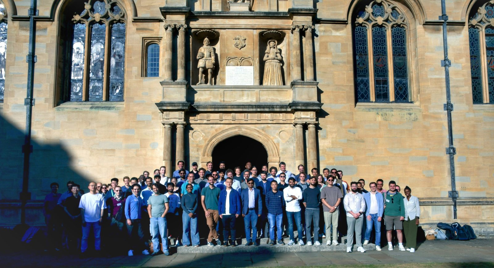
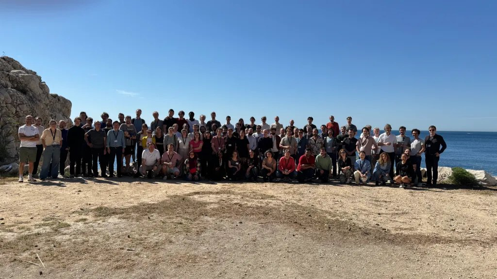
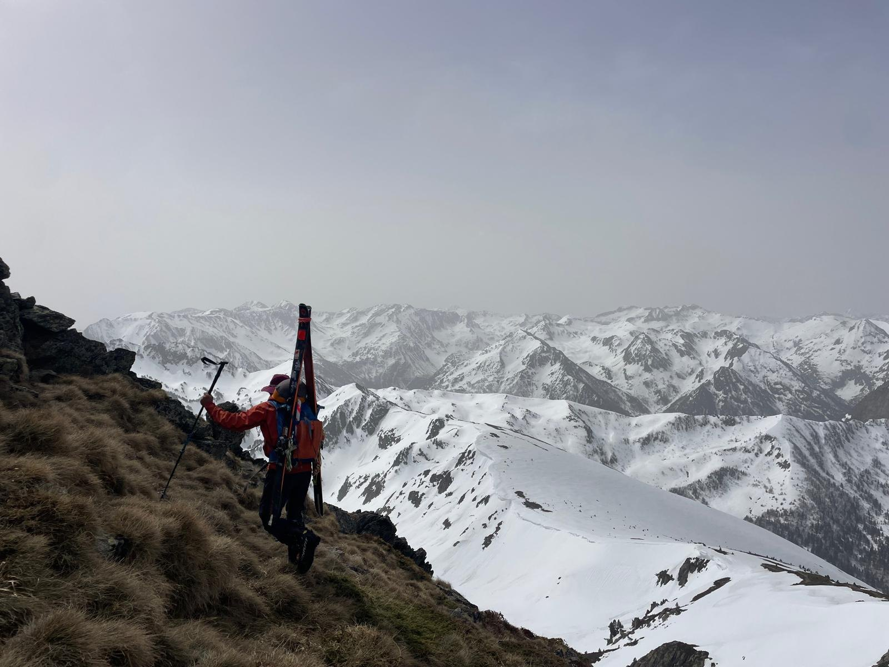

Talks & media
Seminars, interviews, outreach, and a few pictures from the road.
Talks
- JMC 2026, Journées de la Matière Condensée (SFP), Toulouse, October 2026 — Sink or swim: how microhydrodynamics drives bioconvection patterns.
- Cercle Pierre de Jumièges, Société des ingénieurs Arts & Métiers, Paris, June 2026 — Formes futures : ce que la nature révèle à l'ingénieur (invited).
- Basilisk (Gerris) Users' Meeting 2025, University of Oxford, 7–9 July 2025 — Role of hydrodynamics in bioconvection (programme).
- Institut ∂'Alembert seminar, 2022 — Controlling laminar-to-turbulent transition with superhydrophobic surfaces (video).
- Coming: invited lecture at the Cargèse summer school Assembling Life, July 2027.
Media


From the road






